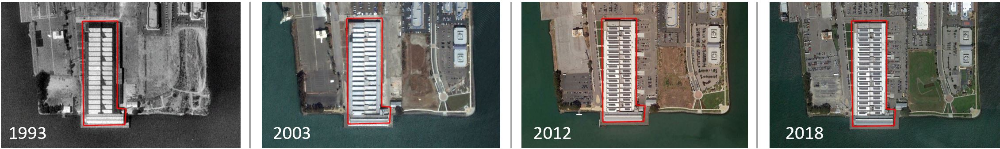
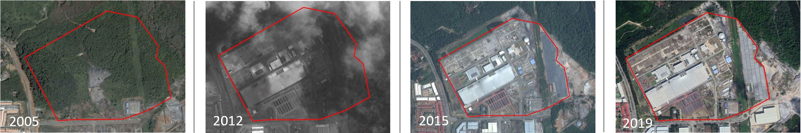

SunPower Manufacturing Sites and Solar Star Location
Renewable energy like solar energy is taking the energy sector by storm. Policies, tax breaks, and incentives are encouraging companies and people to put solar panels on their homes, cars, and buisnesses. However, have you ever wondered what the impacts are on the land and the environment? This story map dives into the environmental side of solar production looking at where the manufacturing sites are located and what type of impact they might have made on the land and the environment. Scroll through each site to find out more about each location.
Green House Gas Emissions from SunPower's the 2016 Carbon Disclosure Project
The GHG emissions accounted for in this section are recorded as part of the GHG Protocol Corporate Standards. Companies classify their GHG emissions based off of three scopes.
Scope 1 emissions: these are direct emissions from owned or controlled sources.
Scope 2 emissions: these are indirect emissions from the generation of purchassed energy.
Scope 3 emissions: accounts for emissions at the corporate level, while the Product Standard accounts for emissions at the individual prodcut level.
SunPower SanJose, California
Emissions use break down from the 2016 Carbon Disclosure Project provided by SunPower.
- Scope 1 emissions CO2 in metric tons: 993
- Scope 2 emissions location based CO2 in metric tons: 1,287
- Scope 2 emissions market-based CO2 in metric tons: 1,719
The images below are a compilation of avaliable historical Google Earth images for the specificed manufactuirng site.
Click on the image to enlarge
Use the blue slide to compare the site from 1993 to 2018

SunPower Richmond, California
Emissions use break down from the 2016 Carbon Disclosure Project provided by SunPower.
- Scope 1 emissions CO2 in metric tons: 2
- Scope 2 emissions location based CO2 in metric tons: 3,724
- Scope 2 emissions market-based CO2 in metric tons: 2,259
The images below are a compilation of avaliable historical Google Earth images for the specificed manufactuirng site.
Click on the image to enlarge
Use the blue slide to compare the site from 1993 to 2018
SunPower Mexicali, Mexico
Emissions use break down from the 2016 Carbon Disclosure Project provided by SunPower.
- Scope 1 emissions CO2 in metric tons: 42
- Scope 2 emissions location based CO2 in metric tons: 8,519
- Scope 2 emissions market-based CO2 in metric tons: 8,519
The images below are a compilation of avaliable historical Google Earth images for the specificed manufactuirng site.
Click on the image to enlarge
Use the blue slide to compare the site from 1996 to 2018
SunPower Toulouse
Emissions use break down from the 2016 Carbon Disclosure Project provided by SunPower.
- Scope 1 emissions CO2 in metric tons: not listed
- Scope 2 emissions location based CO2 in metric tons: 205
- Scope 2 emissions market-based CO2 in metric tons: 205
The images below are a compilation of avaliable historical Google Earth images for the specificed manufactuirng site.
Click on the image to enlarge
Use the blue slide to compare the site from 2002 to 2018
SunPower Lyon 2 France
Emissions use break down from the 2016 Carbon Disclosure Project provided by SunPower.
- Scope 1 emissions CO2 in metric tons: not listed
- Scope 2 emissions location based CO2 in metric tons: 26
- Scope 2 emissions market-based CO2 in metric tons: 26
The images below are a compilation of avaliable historical Google Earth images for the specificed manufactuirng site.
Click on the image to enlarge
Use the blue slide to compare the site from 2005 to 2018
SunPower De Vernejoul France
Emissions use break down from the 2016 Carbon Disclosure Project provided by SunPower.
- Scope 1 emissions CO2 in metric tons: not listed
- Scope 2 emissions location based CO2 in metric tons: 172
- Scope 2 emissions market-based CO2 in metric tons: 172
The images below are a compilation of avaliable historical Google Earth images for the specificed manufactuirng site.
Click on the image to enlarge
Use the blue slide to compare the site from 2011 to 2018
SunPower TEMASOL
Emissions use break down from the 2016 Carbon Disclosure Project provided by SunPower.
- Scope 1 emissions CO2 in metric tons: 291
- Scope 2 emissions location based CO2 in metric tons: 31
- Scope 2 emissions market-based CO2 in metric tons: 31
The images below are a compilation of avaliable historical Google Earth images for the specificed manufactuirng site.
Click on the image to enlarge
Use the blue slide to compare the site from 2004 to 2018
SunPower Cape Town, South Africa
Emissions use break down from the 2016 Carbon Disclosure Project provided by SunPower.
- Scope 1 emissions CO2 in metric tons: 5
- Scope 2 emissions location based CO2 in metric tons: 165
- Scope 2 emissions market-based CO2 in metric tons: 165
The images below are a compilation of avaliable historical Google Earth images for the specificed manufactuirng site.
Click on the image to enlarge
Use the blue slide to compare the site from 2001 to 2019
SunPower Fab 3 Malaysia
Emissions use break down from the 2016 Carbon Disclosure Project provided by SunPower.
- Scope 1 emissions CO2 in metric tons: 82
- Scope 2 emissions location based CO2 in metric tons: 146,248
- Scope 2 emissions market-based CO2 in metric tons: 146,248
The images below are a compilation of avaliable historical Google Earth images for the specificed manufactuirng site.
Click on the image to enlarge
Use the blue slide to compare the site from 2005 to 2019
SunPower Modco Philipines
Emissions use break down from the 2016 Carbon Disclosure Project provided by SunPower.
- Scope 1 emissions CO2 in metric tons: 159
- Scope 2 emissions location based CO2 in metric tons: 8,138
- Scope 2 emissions market-based CO2 in metric tons: 8,138
The images below are a compilation of avaliable historical Google Earth images for the specificed manufactuirng site.
Click on the image to enlarge
Use the blue slide to compare the site from 2004 to 2018
SunPower Fab4 Philipines
Emissions use break down from the 2016 Carbon Disclosure Project provided by SunPower.
- Scope 1 emissions CO2 in metric tons: 46
- Scope 2 emissions location based CO2 in metric tons: 1,971
- Scope 2 emissions market-based CO2 in metric tons: 1,971
The images below are a compilation of avaliable historical Google Earth images for the specificed manufactuirng site.
Click on the image to enlarge
Use the blue slide to compare the site from 2004 to 2018
SunPower Fab2 Philipines
Emissions use break down from the 2016 Carbon Disclosure Project provided by SunPower.
- Scope 1 emissions CO2 in metric tons: 1,006
- Scope 2 emissions location based CO2 in metric tons: 97,618
- Scope 2 emissions market-based CO2 in metric tons: 97,618
The images below are a compilation of avaliable historical Google Earth images for the specificed manufactuirng site.
Click on the image to enlarge
Use the blue slide to compare the site from 2006 to 2019
Solar Star Energy Plant
Quick Facts.
- Location: Rosamond, California
- Capacity: 579 MW
- Number of Modules: 1,720,000
- Homes Powered: 255,000
- Acres: 3,200 (4x the size of Central Park)
- Completed: March 2015
- Carbon Emissions Avoided: 570,000 tons per year
The proejct was constructed on 3,200 acres of previously owned private agricultural land. The site location is located in an area with little rain and high winds. Special care was taken to reduce the amount of dust created during construction to try and avoid erosion and dust storm issues. Among the techniques to control dust were grass seeding prior to construction and during, and water usage.
Water Usage Facts.
- 2005 to 2009 agricultural irrigation: 4.1 to 6.2 billion gallons per year
- During construction: 43.3 million gallons per year
- During Solar Star Operation: 99% less than during agricultural irrigation
The images below are a compilation of avaliable historical Google Earth images for the specificed manufactuirng site.
Click on the image to enlarge
×Use the blue slide to compare the site from 1984 to 2016
Facts from Solar Star Fact Sheet and BHE Solar Star Project Facts